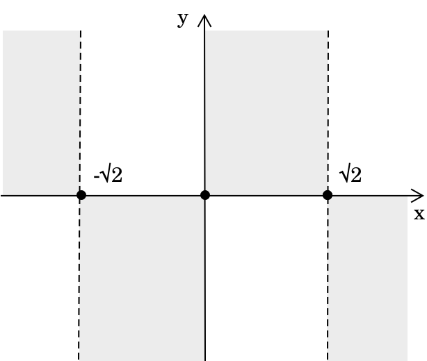

Аналіз графіків функцій
Вступ
Аналіз графіка функції \(y=f(x)\) дозволяє дослідити її поведінку та ключові характеристики, надаючи цінну інформацію про її математичні властивості. Це структурований процес, який можна ефективно виконати, дотримуючись точного аналітичного алгоритму, що складається з наступних кроків.
- Визначити область визначення, ідентифікувавши множину дійсних чисел, для яких функція визначена.
- Перевірити на симетрію, щоб визначити, чи є функція парною або непарною.
- Знайти точки перетину, визначивши точки, де графік перетинає вісь \(x\) та вісь \(y\).
- Проаналізувати знак функції, щоб визначити, де вона додатна або від'ємна.
- Визначити асимптоти, включаючи горизонтальні, вертикальні або похилі межі.
- Використати першу похідну для знаходження інтервалів зростання та спадання.
- Застосувати другу похідну для дослідження випуклості та виявлення точок перегину.
- Надати якісне зображення графіка функції.
Область визначення
Першим кроком в аналізі функції є визначення її області визначення — множини всіх дійсних чисел, для яких функція є коректно визначеною. Область визначення залежить від типу функції, що аналізується. Визначення області визначення є критично важливим, оскільки воно встановлює значення аргументів, для яких функцію можна обчислити та побудувати її графік. Щоб знайти область визначення, ми досліджуємо вираз функції та визначаємо будь-які математичні обмеження, які можуть обмежувати певні значення \( x \).
Розглянемо як приклад функцію \( y = x^3 - 2x \). Це поліноміальна функція вигляду: \[y = a_n x^n + a_{n-1} x^{n-1} + \dots + a_1 x + a_0\] де \( a_n, a_{n-1}, \dots, a_0 \) — дійсні коефіцієнти, а \( n \) — степінь полінома.
Оскільки поліноміальні функції визначені для всіх дійсних чисел, область визначення цієї функції — \( \mathbb{R} \).
Симетрія
Наступним кроком є визначення того, чи виявляє функція симетрію відносно осі \( y \) або початку координат.
-
Функція \(y=f(x)\) класифікується як парна, якщо вона задовольняє умову \(f(-x) = f(x) \quad \forall x \in D.\) Це означає, що графік симетричний відносно осі \( y \).
-
Функція \(y=f(x)\) класифікується як непарна, якщо вона задовольняє умову \(f(-x) = -f(x) \quad \forall x \in D.\) Це означає, що графік симетричний відносно початку координат.
Щоб визначити, чи є функція \(f(x) = x^3 – 2x\) парною чи непарною, обчислимо \( f(-x) \). Замінюючи \( x \) на \( -x \), маємо: \[ \begin{align} f(-x) &= (-x)^3 - 2(-x) \\[0.5em] &= -x^3 + 2x \end{align} \]
Обчислюючи \( -f(x) \), отримаємо:
\[
\begin{align}
-f(x) &= -(x^3 - 2x) \\[0.5em]
&= -x^3 + 2x
\end{align}
\]
Оскільки \( f(-x) = -f(x) \), функція є непарною, що означає, що вона симетрична відносно початку координат.
Перетини з координатними осями
Після дослідження симетрії наступним кроком є визначення точок, у яких функція перетинає координатні осі. До них належать:
- перетини з віссю \( x \), що отримуються шляхом розв'язання \( f(x) = 0 \).
- перетин з віссю \( y \), що визначається як \( f(0) \), якщо функція визначена при \( x = 0 \).
Щоб визначити точки перетину з віссю \( y \), підставимо \( x = 0 \) у функцію \( f(x) \). Маємо: \[f(0) = 0^3 – 2(0) = 0\]
Таким чином, функція перетинає вісь \( y \) у точці: \[(0, 0)\]
Далі, щоб знайти точки перетину з віссю \( x \), прирівняємо \( f(x) = 0 \):
\[x^3 – 2x = 0\] \[x(x^2 – 2) = 0\]
Розв'язуючи відносно \( x \), маємо: \[x = 0 \quad \text{або} \quad x^2 - 2 = 0\]
З \( x^2 - 2 = 0 \) отримаємо:
\[x = \pm \sqrt{2}\]
Таким чином, функція перетинає вісь \( x \) у точках:
\[(0,0), \quad (\sqrt{2},0), \quad (-\sqrt{2},0)\]
Отже, перетинами з координатними осями є:
вісь \( y \): \( (0,0)\)
вісь \( x \): \( (0,0) \), \( (\sqrt{2},0) \), \( (-\sqrt{2},0) \)
Аналіз знаків
Далі ми проаналізуємо знак функції, визначивши проміжки, на яких вона є додатною та від'ємною. Це робиться шляхом розв'язання нерівності \(f(x) > 0\), яка визначає, де функція набуває додатних значень. Доповняльні проміжки, де \( f(x) < 0 \), вказують на те, де функція є від'ємною.
У цьому контексті, оскільки ми працюватимемо з нерівностями, корисно нагадати, як виконувати аналіз знаків у нерівностях.
Щоб проаналізувати знак функції, ми визначимо, де \( f(x) \) є додатною, від'ємною або дорівнює нулю, розв'язавши нерівність:
\[x^3 - 2x \gt 0\]
Розклавши вираз на множники, маємо: \[x(x^2 – 2) \gt 0\]
З першого множника отримаємо: \[x \gt 0\]
З другого множника отримаємо: \[x^2-2 \gt 0 \Rightarrow x \gt \sqrt{2} \quad x \lt -\sqrt{2}\]
Перемноживши знаки першого та другого множників, ми отримаємо (чорним кольором) проміжки, на яких функція є додатною.
| \[ -\sqrt{2}\] | \[ 0\] | \[ +\sqrt{2}\] | ||
|---|---|---|---|---|
Отже, функція \( x(x^2 - 2) \) є додатною при:
\[x \in (-\sqrt{2},0) \cup (+\sqrt{2},+\infty)\]
Для повноти нагадаємо, що аналіз знаків функції, як у наведеному прикладі, вимагає дослідження знаків її окремих множників та визначення загального знака для кожного проміжку шляхом обчислення добутку цих знаків.
Потім ми відобразимо на декартовій площині проміжки, де має бути розташована функція, виключаючи ті, що позначені сірим кольором.

Асимптоти
Іншим важливим кроком в аналізі функції є дослідження її поведінки на межах області визначення. Це передбачає обчислення границь, щоб визначити, як поводиться функція, коли \( x \) наближається до кінцевих точок своєї області визначення або прямує до нескінченності. Обчисливши ці границі, ми можемо визначити наявність асимптот.
-
Функція \( f(x) \) має горизонтальну асимптоту, якщо: \[\lim\limits_{x \to \pm\infty} f(x) = L\] де \( L \) — скінченне дійсне число. У цьому випадку пряма \( y = L \) є асимптотою, що описує поведінку функції на нескінченності.
-
Функція \( f(x) \) має вертикальну асимптоту в точці \( x = x_0 \), якщо
\[\lim\limits_{x \to x_0^\pm} f(x) = \pm\infty\] У цьому випадку пряма \( x = a \) є асимптотою, що вказує на необмежений ріст функції поблизу \( x = a \). -
Функція \( f(x) \) має похилу асимптоту вигляду \( y = mx + q \), якщо наступні границі існують і є скінченними:
\[m = \lim\limits_{x \to \pm\infty} \frac{f(x)}{x}\] \[q = \lim\limits_{x \to \pm\infty} \left[ f(x) - mx \right]\]
Щоб визначити, чи існують горизонтальні асимптоти, ми перевіримо, чи існує наступна границя і чи є вона скінченною: \[\lim\limits_{x \to \pm\infty} f(x)\]
Маємо:
\[\lim\limits_{x \to \pm\infty} (x^3 – 2x) = \pm\infty\]
Функція прямує до нескінченності в обох напрямках, таким чином, горизонтальних асимптот немає.
Вертикальні асимптоти виникають у точках, де функція не визначена і її значення зростають необмежено. Дана функція \(y = x^3 – 2x\) є поліномом, який визначений для всіх \( x \in \mathbb{R} \). Оскільки поліноми не мають точок розриву або нескінченних границь при скінченних значеннях \( x \), ми робимо висновок, що вертикальних асимптот немає.
Щоб визначити наявність похилих асимптот, ми обчислимо кутовий коефіцієнт \(m\) за допомогою наступної границі:
\[m = \lim\limits_{x \to \pm\infty} \frac{x^3 – 2x}{x} = +\infty\]
Оскільки границя не є скінченною, похилих асимптот немає.
Отже, горизонтальних, вертикальних або похилих асимптот немає.
Точки максимуму та мінімуму
Тепер, аналізуючи першу похідну, ми спочатку визначаємо її область визначення та нулі, знаходячи, де \( f^{\prime}(x) = 0 \). Досліджуючи її знак, ми встановлюємо проміжки, на яких функція зростає \( f^{\prime}(x) > 0 \), і, відповідно, ті, на яких вона спадає \( f^{\prime}(x) < 0 \).
Далі ми визначаємо можливі локальні максимуми та мінімуми, обчислюючи критичні точки \( f(x) \). Крім того, ми досліджуємо функцію на наявність точок перегину, де змінюється випуклість, та точок, де \( f(x) \) не є диференційовною.
Обчислимо першу похідну \( f(x) \) та проаналізуємо її знак. \[f^{\prime}(x) = 3x^2 - 2\]
Для \[ 3x^2 - 2 > 0 \Rightarrow x < -\sqrt{\frac{2}{3}} \quad x > \sqrt{\frac{2}{3}} \]
Звідси випливає, що \(f(x)\) зростає при:
\[x < -\sqrt{\frac{2}{3}} \quad \text{або} \quad x > \sqrt{\frac{2}{3}}\]
і спадає при:
\[-\sqrt{\frac{2}{3}} < x < \sqrt{\frac{2}{3}}\]
З аналізу знаків випливає, що в точці \( \sqrt{\frac{2}{3}} \) є локальний мінімум. Тепер обчислимо значення функції в цій точці:
\[ \begin{align} f\left(\sqrt{\frac{2}{3}}\right) &= \left(\sqrt{\frac{2}{3}}\right)^3 - 2\left(\sqrt{\frac{2}{3}}\right) \\[0.5em] &= \frac{2\sqrt{2}}{3\sqrt{3}} – 2\sqrt{\frac{2}{3}} \\[0.5em] &= \frac{2\sqrt{6}}{9} – \frac{6\sqrt{6}}{9} \\[0.5em] &= \frac{-4\sqrt{6}}{9} \end{align} \]
З аналізу знаків також випливає, що в точці ( -\sqrt{\frac{2}{3}} ) є локальний максимум. Тепер обчислимо значення функції в цій точці:
\[ \begin{align} f\left(-\sqrt{\frac{2}{3}}\right) &= \left(-\sqrt{\frac{2}{3}}\right)^3 – 2\left(-\sqrt{\frac{2}{3}}\right) \\[0.5em] &= -\frac{2\sqrt{2}}{3\sqrt{3}} + 2\sqrt{\frac{2}{3}} \\[0.5em] &= -\frac{2\sqrt{6}}{9} + \frac{6\sqrt{6}}{9} \\[0.5em] &= \frac{4\sqrt{6}}{9} \end{align} \]
Функція має:
-
Локальний максимум у точці:
\[x = -\sqrt{\frac{2}{3}}, \quad y = \frac{4\sqrt{6}}{9}\] -
Локальний мінімум у точці:
\[x = \sqrt{\frac{2}{3}}, \quad y = \frac{-4\sqrt{6}}{9} \]
Точки перегину
Нарешті, аналізуючи другу похідну \( f^{\prime\prime}(x) \), ми визначаємо проміжки, на яких графік вигнутий вгору \( f^{\prime\prime}(x) > 0 \) або вигнутий вниз \( f^{\prime\prime}(x) < 0 \).
Тепер ми визначимо точки перегину, аналізуючи знак другої похідної. Друга похідна f(x) дорівнює:
\[f^{\prime\prime}(x) = 6x\]
Прирівнявши \( f’'(x) = 0 \), ми знаходимо точку перегину в \(x = 0\). Обчисливши \( f(0) \), отримаємо \( y = 0 \).
Таким чином, точка перегину: \[(0,0)\]
Кінцевий графік
На цьому етапі ми маємо всю необхідну інформацію для побудови якісно-кількісного графіка нашої функції, враховуючи її поведінку, можливі асимптоти, локальні максимуми та мінімуми, а також точки перегину.
У заданому прикладі ми отримуємо наступний графік:
На завершення, дослідження графіка функції вимагає структурованого підходу, що включає визначення ключових властивостей, таких як область визначення, симетрія, точки перетину з осями, аналіз знаків, асимптоти, монотонність, випуклість та критичні точки. Систематичне виконання цих кроків забезпечує точне та повне розуміння поведінки функції.